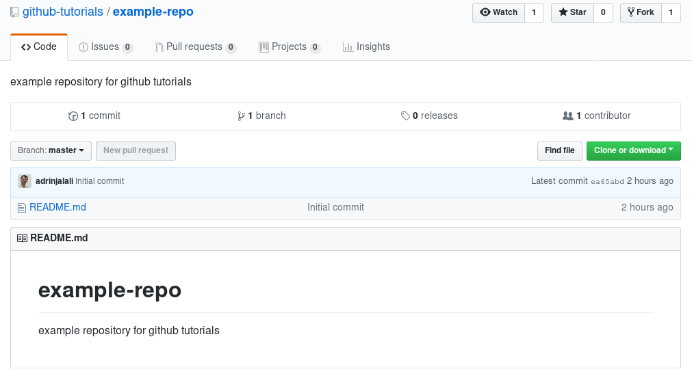
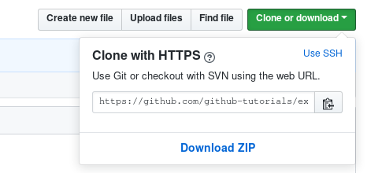
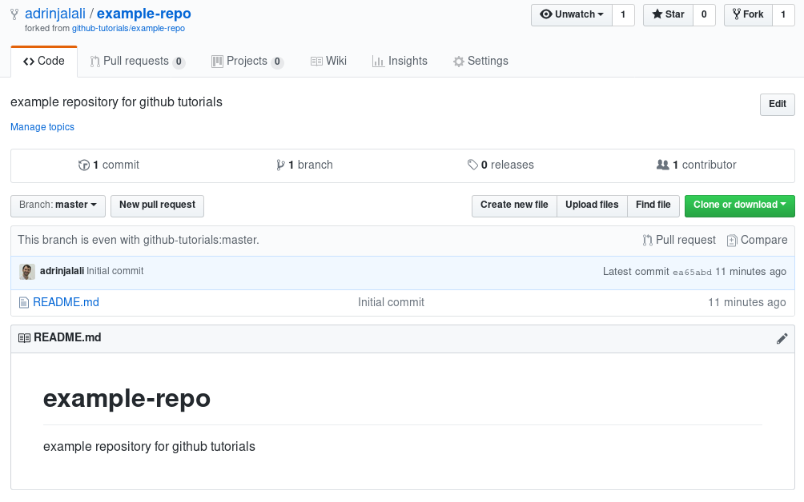
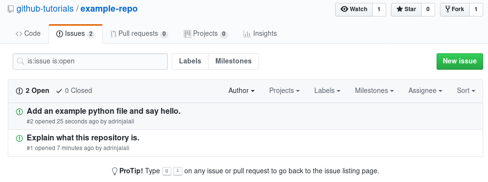
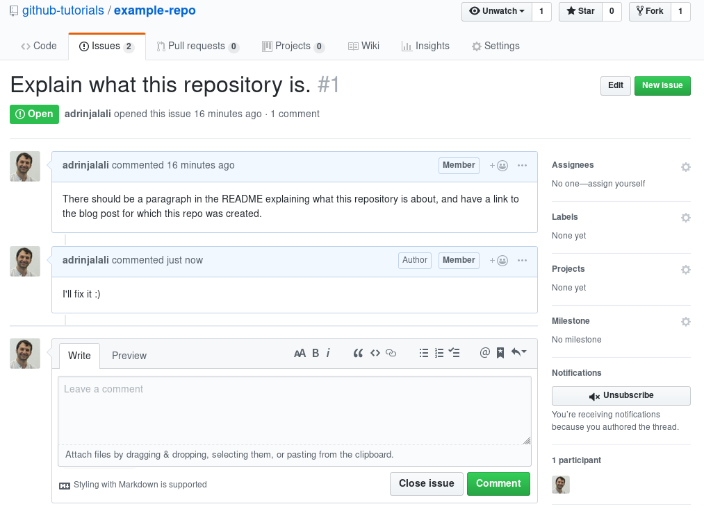
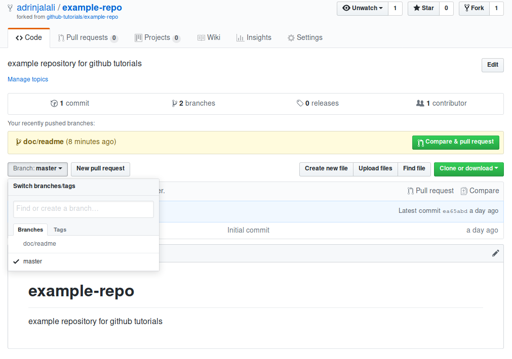

The idea behind this post is not to show how to install the tools you need, or
to list a bunch of [at a first glance seemingly random] git commands. There
are enough tutorials and blog posts explaining them out there in the wild that
with a web search you’ll find too many of them anyway.
This goal of this post is to give you the ingredients you need, to contribute to a project on the GitHub platform and collaborate with other people there.
The first important point is the distinction between git and GitHub!
GitHub is a platform which uses git, but it’s also not the only platform that
uses it. Another somewhat similar platform is GitLab, but there are crucial
differences between the two that has made GitHub a much more convenient place
for a community of strangers to work together. By far the best source of
information I can recommend is the Pro Git
book. To keep it practical, I may not strictly
stick to the definitions present in the book; the idea is to get you started
first, then you can cover the concepts more accurately once you have more time.
git is a version control system, which is:
Version control is a system that records changes to a file or set of files over time so that you can recall specific versions later1.
Strictly speaking, to develop a package using git there is no need for any
server or a platform. Most git related tasks you’d be doing are done
completely locally on your own machine anyway.
The main issue at the beginning when you start to work with git is all the
jargon used around it. To get an idea of what we’re talking about here, the
GIT Workflow - Georgia Tech - Software Development
Process short video is a great
place to start:

Now let’s go through some of the concepts you’d encounter in
almost any project. For the rest of this post, I’ll be assuming you’ve
installed git and gone through this
tutorial
up to Step 3: setup “config”, and know your way around a shell/terminal.
Source tree is your project’s folder, with all its subfolders and files that
are included in the project. Using git you’ll be keeping track of all the
changes on the source tree.
However, there are always files and folders which you don’t want to keep track
of, for instance the build directory which keeps compiled binary files of
your project. Cache and temporary files are also another category of files you
would like to exclude from being tracked. The way you tell git to ignore
those is through a .gitignore file usually put in the root of the project’s
folder. For most programming languages, there are descent .gitignore
templates, for instance you can take a look at the
Python.gitignore.
This means git will not automatically start tracking any of the files and/or
folders mentioned in .gitignore, but you can still explicitly tell it to do
so if you wish for a particular file or folder. For instance, you may want to
ignore all .pdf files, but keep a single .pdf in your repository for some
reason. You would be able to do so by explicitly telling git to keep track of it.
Once you start tracking changes to your project’s source tree using git, you
have a git repository. The git repository includes all the history of the
whole project in a .git folder under the root of the project. It’s worth
noting that by default, every file and folder starting with a dot (.) is a
hidden file/folder under linux.
For the rest of this post, I’ll be using the screenshots taken at the time of writing the post. It may slightly change through time as GitHub continues its development.
For the purpose of this tutorial, I’ve setup an example repository on GitHub, which you can see under this link. At first it’s almost empty and it looks like this:

A few things to notice here are:
- There’s a Watch/Unwatch button which takes a few states, and you can use it to set the amount of notification you’d be receiving for the repository. You will receive a notification (depending on your settings, it can be an email) for each event happening on the repository. If you’d like to be informed and notified of every single post and contribution on the repo, then you’d want to “watch” it. For a busy repository like scikit-learn, it can be tens of emails a day. By default, you’ll be notified if there’s a response to the issues and pull requests you’ve been working on (we’ll get to them shortly).
- If you like to make the contributors and maintainers of the repository happy, you should consider “Star“ing the repo.
The other option up there, is fork, which requires a bit of an explanation.
When you have a git repository, you can clone that by copying everything
you have on that repo, including the .git folder. So copying is the simplest
type of clone you can have. The clone is the same as the original repository,
including its history (since you copied the .git folder as well). But let say
you want to clone a repository from a server, and every now and then sync your
local copy with what you have on the server. That’s why you also have a “clone
or download” button on your repository, which gives you the address of the
repository which you can use locally to clone using a git command. Here’s how
you could get the address on the original repository:

And then you’d be using the following command to clone that repository locally:
$ git clone https://github.com/github-tutorials/example-repo.git
The above command will download the repository and put it in a folder named the
same as the repo itself (example-repo in this case). At the same time, it
will store the information about from where it got the repository, which is
called a remote, and by default this remote is called origin. You can get
a list of your remotes using the following command (after going to your repo’s folder):
$ cd example-repo
$ git remote -v
origin https://github.com/github-tutorials/example-repo.git (fetch)
origin https://github.com/github-tutorials/example-repo.git (push)
Again, please note that the above command and all the ones from this point
should be run when you’re already in your repository’s folder. As you can see,
there are two identical addressed for two purposes, fetch and push. You can
fetch changes on the repository which have happened on the remote server,
but you don’t have, using git fetch, and push any changes on your local
machine using git push. But there are a few steps before we can do that.
You may have noticed that we cloned the repository, without telling a maintainer of the original repo that we’re doing so. That’s because the repo is a public repository. For a private repository you need to be given explicit permissions by a maintainer/package developer before you can access it. Basically if you see a repository on GitHub, you can clone it.
However, since you’re not given explicit permissions, you cannot modify
anything on the original repo, and that also means you cannot do a git push
directly to it. That’s why you need to fork the repository before cloning
it. It’ll create a server side clone of the repo in your account. You can do
that by simply pushing the “fork” button up there. Please note that if you’re
a member of one or more organizations, it’ll ask you to choose an organization
where it should create the fork. Your username will be listed there and you
can choose that to create the fork under your own user and not touch any of the
organizations you’re a member of. Otherwise it’ll simply create the fork under
your username. This is what you’ll see once you fork the repo:

As you can see, it also tells you from where you forked the repository. Now you have administrative access to this repository, and that’s why you also see a “Settings” tab. Now if you try to get the clone address of this repo, it shows you the one you own. Now you have two options, you can delete what you had cloned, and clone a new one using the new address, which in my case would be:
$ git clone https://github.com/adrinjalali/example-repo.git
Please note that the github-tutorials is changed to adrinjalali, my
username. But you can also manipulate your remotes and change what you have to
the new remote address, and avoid having to delete and redownload the
repository. By convention/default, origin is the remote you own and you sync
your local copy with, and upstream is the original repository you forked.
Every now and then you’ll be needing to resync your repository with the changes
which have happened on upstream, to keep up with the latest changes. So,
let’s first rename origin to upstream:
$ git remote rename origin upstream
And then add the new origin:
$ git remote add origin https://github.com/adrinjalali/example-repo.git
$ git remote -v
origin https://github.com/adrinjalali/example-repo.git (fetch)
origin https://github.com/adrinjalali/example-repo.git (push)
upstream https://github.com/github-tutorials/example-repo.git (fetch)
upstream https://github.com/github-tutorials/example-repo.git (push)
If you had first forked and then cloned your own repo, you’d need to only add
the upstream as a remote, and now you have the ingredients to do so.
Now let say you’d want to find something to work on, related to this repo. Usually (but not always), there’s an issue related what you’d be working on. You can either report an issue yourself before starting a change, or you can pick up an issue and say you’d like to work on it. The “issues” tab on the original repository (the upstream, not yours) would be the place to start. For instance, I’ve added two issues on our example and it looks like:

Now assume you’d like to work on the “Explain what this repository is” issue. It states what should be done, and you can leave a comment saying you’ll fix it. It’ll be different for you since you’re not a member/maintainer of the repo, but it’ll look similar to this one:

Please also note that on the right side of the title of the issue, and in the URL of the issue, the ID of the issue is mentioned, which is 1 in this case (the first issue in the repository); we’ll get back to it later.
Going back to your local copy of the repo, you can start contributing using a git workflow, which involves proper branching and merging and so on. There are different ways you can do that, and with a quick search you’ll find proposals such as this, this, and this one. It’s good to go through some of those and familiarize yourself with the process, but it’s not a must. Those workflows become more important if a few collaborators start working on the same repository, which would happen in an organization and specially on a GitLab platform. However, since you’ll be doing everything on your own repository and not the upstream, you can do whatever you want without disturbing the upstream. Something they all have in common is the concept of a branch. As the book has it:
Nearly every VCS [(Version Control System)] has some form of branching support. Branching means you diverge from the main line of development and continue to do work without messing with that main line. In many VCS tools, this is a somewhat expensive process, often requiring you to create a new copy of your source code directory, which can take a long time for large projects.
Some people refer to Git’s branching model as its “killer feature,” and it certainly sets Git apart in the VCS community. Why is it so special? The way Git branches is incredibly lightweight, making branching operations nearly instantaneous, and switching back and forth between branches generally just as fast. Unlike many other VCSs, Git encourages workflows that branch and merge often, even multiple times in a day. Understanding and mastering this feature gives you a powerful and unique tool and can entirely change the way that you develop.
The main branch is always master. Another main branch in a project may be
dev, devel, or develop, but not all projects have it, and it depends on
the kind of workflow they choose to follow. If they choose to have master
very stable and corresponding to the latest release, then the main development
would happen on develop. On the other hand, if they decide to have release
branches and have the main development happen on master, they’ll probably not
have the develop branch and instead have branches such as v1.2, v1.3,
etc. You usually would need to base your development on the active and under
development branch. When you fork or clone a repository, it also includes
all the branches that repository, and you can simply change to that branch locally.
You can always see the branch you have as active using:
$ git status
On branch master
nothing to commit, working tree clean
As you can see, by default you’re on the master branch. Now since master is
our main development branch, you can base your work on it and create a branch
from it. You can create a branch based on your current active branch using:
$ git branch test
$ git status
On branch master
nothing to commit, working tree clean
$ git branch --list
* master
test
As you can see, we created a branch, but still stayed on master. In order to change to the newly created branch, you should checkout the branch:
$ git checkout test
Switched to branch 'test'
$ git branch --list
master
* test
You can also go back to master, and safely delete this test branch:
$ git checkout master
Switched to branch 'master'
$ git branch -D test
Deleted branch test (was ea65abd).
$ git branch --list
* master
ea65abd is the abbreviated commit hash which you can ignore for now.
A more convenient way to create a new branch and check it out at the same time would be:
$ git checkout -b doc/readme
Switched to a new branch 'doc/readme'
As you can see, the name of the new branch is doc/readme. The name can be
almost anything, and one convention that some people follow is to name branches
as category/item, but you could as well do category-item, or
my-random-branch-name. I’d suggest you always keep your master clean and in
sync with your remote, and only work on branches for each feature/issue.
Now we can finally start working on the issue. This is the README.md now:
$ cat README.md
# example-repo
example repository for github tutorials
And let’s change it to:
$ cat README.md
# example-repo
example repository for github tutorials
This repository is made to showcase some common tasks and processes on GitHub
and to present the related `git` commands. The post explaining these processes
is located
[here](gitgithub-how-to-contribute-to-an-open-source-project-on-github.html).
Now let’s see what the status of the local repo is:
$ git status
On branch doc/readme
Changes not staged for commit:
(use "git add <file>..." to update what will be committed)
(use "git checkout -- <file>..." to discard changes in working directory)
modified: README.md
no changes added to commit (use "git add" and/or "git commit -a")
As you can see, it says the README.md file is modified. You would need to
add the file. That brings us to the lifecycle of a file on a git repo. As
shown in the
book:

These are the 4 states a file can have under the repo:
- Untracked: the file exists in the project tree, but it’s not being tracked by git.
- Unmodified:
git statuswon’t report any of these files, since there has been no changes to them since the last snapshot git has taken from them. That snapshot happens when you commit the changes to files. - Modified: the previous version of the file is recorded in the git repo, but since then, there has been changes to it, and these changes are not recorded yet.
- Staged: there has been changes to the file since the last snapshot, and these changes are set to be recorded by a commit, but that commit hasn’t happened yet.
A more comprehensive explanation of how to record changes in the repo can be found here.
So now we need to move the README.md from modified to staged (using git
add), and then to unmodified (using git commit):
$ git add README.md
$ git commit -m "added required changes to the README.md"
Always include a message with the commit. Meaningful Commit messages are extremely helpful for later coming back and finding some changes you’ve made previously. Alternatively, you could summarize the above two commands in one:
$ git commit -am "added required changes to the README.md"
[doc/readme b43f0b6] added required changes to the README.md
1 file changed, 5 insertions(+)
$ git status
On branch doc/readme
nothing to commit, working tree clean
The difference is that git commit -a adds all modified files to the staging
area, which may not be what you want. For more control you can use the two
separate commands. Also, as you can see, the working tree is clean again.
Now it’s time to push the changes to our remote copy of the repository,
which we can do by git push:
$ git push
fatal: The current branch doc/readme has no upstream branch.
To push the current branch and set the remote as upstream, use
git push --set-upstream origin doc/readme
OOPS, it failed, because there is no corresponding branch on the remote copy
which corresponds to the local branch we’ve made. Your own remote copy is the
upstream to the local copy, and you see that you need to tell git which
branch on the upstream should be the corresponding one. As you can see, by
default it suggests the same branch name, on the origin remote. The suggested
command would create a new branch on your remote copy, and upload the changes
to that branch:
$ git push --set-upstream origin doc/readme
Enumerating objects: 5, done.
Counting objects: 100% (5/5), done.
Delta compression using up to 4 threads
Compressing objects: 100% (2/2), done.
Writing objects: 100% (3/3), 461 bytes | 461.00 KiB/s, done.
Total 3 (delta 0), reused 0 (delta 0)
remote:
remote: Create a pull request for 'doc/readme' on GitHub by visiting:
remote: https://github.com/adrinjalali/example-repo/pull/new/doc/readme
remote:
To github.com:adrinjalali/example-repo.git
* [new branch] doc/readme -> doc/readme
Branch 'doc/readme' set up to track remote branch 'doc/readme' from 'origin'.
Your output would be slightly different. Here I had to change my remote and use the ssh connection instead. Not only it’s more secure, it also allows you to interact with your account without the need to enter your username/password every time you need permissions. You can find the guides to setup that for your account here. I also recommend activating a two factor authentication (2FA) for your account.
Now if you go back to your account and check the repository, you’ll see that a new branch has been created:

Now that you have the changes on your account, you can go ahead and create the
first pull request. It basically means you’d send a request to the
maintainers of the repository to pull the changes you’ve made, from your repo
into the original repo. For that, you also need to specify your doc/readme
branch as the from branch, and the master on the original repo as the to
branch. Please note that it would be the develop branch on the upstream repo
if that was what you based your changes on. But in this case, we based the
changes on the master branch of the upstream repo.
Now you could click on the “Compare & pull request” button, or you could go to the upstream repository, then Pull requests (PR), and then New pull request, which brings you to a page where you can explain what the does and then create it.
Once you create the PR, you can wait for reviewers to review your PR, which
usually means they’ll ask you to change a few things. To apply those changes,
you don’t need to create a new PR or a new branch, you simply need to be sure
you’re on the same branch as before, apply your changes, commit to your local
clone (git add, git commit commands), and then push (git push). This will
add your changes to your existing PR.
I hope this helps a few people a little bit. I’d be happy to get some feedback and see if it’s helpful or not.
-
Chacon, Scott, and Ben Straub. Pro git. Apress, 2014. ↩